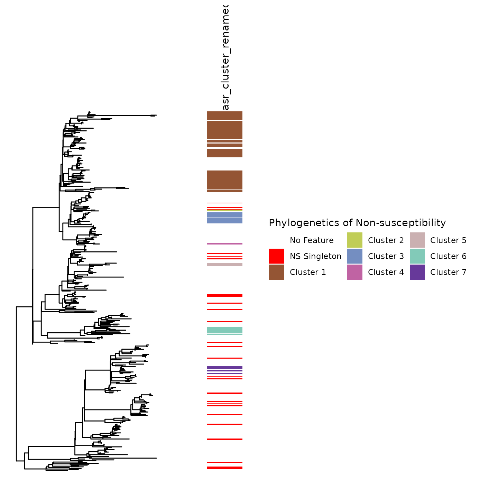

ancestral_state_reconstruction_cluster_detection
Source:vignettes/ancestral_state_reconstruction_cluster_detection.Rmd
ancestral_state_reconstruction_cluster_detection.RmdIntroduction
This tool’s main workhorse is the asr(), which leverages corHMM’s ancestral state reconstruction algorithm to characterize genome-influenced features’ gain, loss, and continuation across a phylogenetic tree.
After performing joint or ancestral state reconstruction, the resultant state predictions of ancestral nodes are parsed to generate a parent-child dataframe. By traversing the phylogenetic tree from the tips to the root, the episodes of trait gain, loss, and continuation are added to the phylogenetic tree’s edge matrix.
This information can be leveraged to infer whether an isolate belonged to a circulating trait-containing lineage (e.g., evidence of cross-transmission) or resultant from a within-host emergence event (e.g., evidence of de novo evolution).
To this aim, we provide a tutorial to leverage our ancestral state reconstruction wrapper function, asr(), and our tree-traversal algorithm, asr_cluster_detection(), to infer the evolutionary history of a trait.
Environment
library(phyloAMR)
library(dplyr)
#>
#> Attaching package: 'dplyr'
#> The following objects are masked from 'package:stats':
#>
#> filter, lag
#> The following objects are masked from 'package:base':
#>
#> intersect, setdiff, setequal, union
library(ggplot2)
library(ape)
#>
#> Attaching package: 'ape'
#> The following object is masked from 'package:dplyr':
#>
#> where
library(ggtree)
#> ggtree v3.16.0 Learn more at https://yulab-smu.top/contribution-tree-data/
#>
#> Please cite:
#>
#> Guangchuang Yu, David Smith, Huachen Zhu, Yi Guan, Tommy Tsan-Yuk Lam.
#> ggtree: an R package for visualization and annotation of phylogenetic
#> trees with their covariates and other associated data. Methods in
#> Ecology and Evolution. 2017, 8(1):28-36. doi:10.1111/2041-210X.12628
#>
#> Attaching package: 'ggtree'
#> The following object is masked from 'package:ape':
#>
#> rotate
library(hues)
library(ggnewscale) Load example data
This tutorial will focus on the emergence and spread of colistin non-susceptibility in a collection of 413 carbapenem-resistant Klebsiella pneumoniae specimens collected across 12 California long-term acute care hospitals.
We focus on the evolution and spread of non-susceptibility to colistin, a last-resort antibiotic used to treat Gram-negative bacteria.
Dataframe
- tip_name_variable: variable with tip names
- Patient_ID: Identifiers for patients in this study
- clades: what clade of epidemic lineage sequence type 258 the isolate belongs to
- colistin_ns: colistin non-susceptibility. 1 = non-susceptible. 0 = susceptible
df <- phyloAMR::df
paste0("Total of 413 isolates")
#> [1] "Total of 413 isolates"
paste0("Number of patients: ",length(unique(df$Patient_ID)))
#> [1] "Number of patients: 338"
dim(df)
#> [1] 413 4
paste0("View of dataframe for first 5 isolates")
#> [1] "View of dataframe for first 5 isolates"
head(df,n = 5)
#> tip_name_var Patient_ID clades colistin_ns
#> PCMP_H1 PCMP_H1 1 clade IIA 0
#> PCMP_H2 PCMP_H2 2 clade IIA 0
#> PCMP_H3 PCMP_H3 3 clade IIB 1
#> PCMP_H4 PCMP_H4 4 clade IIB 0
#> PCMP_H5 PCMP_H5 5 clade I 0
paste0("Frequency of non-susceptibility to colistin: ")
#> [1] "Frequency of non-susceptibility to colistin: "
table(df$colistin_ns)
#>
#> 0 1
#> 277 136
Step 0: Visualization of the trait across the phylogenetic tree
Before performing ancestral state reconstruction, it is critical to visualize the tip states of the trait on the phylogeny.
Our ancestral state reconstruction and clustering algorithm is most powerful in settings where frequent emergence and spread of a trait occurs.
Notice the clustering of Colistin non-susceptibility across the phylogeny.
Numerous emergence events at ancestral nodes and tips can be visually inferred in this phylogeny
Ancestral emergence events had noticeable variations in size. For instance, consider the large cluster of non-susceptibility in the above clade
feature_colors <- c(`1` = "black",`0`="white")
feature_scale <- scale_fill_manual(values=feature_colors,labels=c("Present","Absent"),name="Tip State", guide = guide_legend(nrow=1, title.position = "top", label.position = "right"))
p0 <- gheatmap(ggtree(tr),df %>% select(colistin_ns) %>% mutate_all(as.factor),colnames_position = 'top',width = .25,low = 'white',high='black',colnames_angle = 90,legend_title = 'Colistin non-susceptibility',hjust = 0,color = NULL) + ylim(NA,450) + feature_scale
#> Scale for y is already present.
#> Adding another scale for y, which will replace the existing scale.
#> Scale for fill is already present.
#> Adding another scale for fill, which will replace the existing scale.
p0Step 1: Run ancestral state reconstruction
The workhorse function, asr(), is used to perform ancestral state reconstruction. This wrapper function implements ancestral state reconstruction with a single rate category using the corHMM R package: https://github.com/thej022214/corHMM
Using inferred ancestral states and tip-based data, edges on the phylogenetic tree were evaluated to determine episodes where the trait continued (i.e., susceptible -> susceptible or non-susceptible -> non-susceptible), was gained (i.e., susceptible -> non-susceptible), or was lost (i.e., non-susceptible -> susceptible). This edge matrix can be leveraged for numerous applications, including characterizing the frequency of trait transitions across a phylogeny and investigating phenotype-genotype associations.
-
The following parameters exist for this function
df: Dataframe with tip name variable (e.g., tip_name_variable) and trait variable (e.g., colistin_ns)
tr: Phylogenetic tree object of class phylo
-
model: This approach permits the use of either the equal rates (ER) or the all rates differ (ARD) transition matrices.
Equal rates: Assumes equal transition rates for trait gain (e.g., trait absence -> presence) or loss (e.g., trait gain -> absence)
All rates differ: Assumes different transition rates for trait gain and loss
-
node_states: Whether to perform ‘joint’ or ‘marginal’ ancestral state reconstruction
- From our experience, we recommend using joint ancestral state reconstruction.
asr_obj <- phyloAMR::asr(df = df,tr = tr,tip_name_variable = "tip_name_var",trait = "colistin_ns",model = "ER",node_states = "joint")
#> You specified 'fixed.nodes=FALSE' but included a phy object with node labels. These node labels have been removed.
#> State distribution in data:
#> States: 0 1
#> Counts: 277 136
#> Beginning thorough optimization search -- performing 0 random restarts
#> Finished. Inferring ancestral states using joint reconstruction.
paste0("Output names: ")
#> [1] "Output names: "
names(asr_obj)
#> [1] "corHMM_output" "corHMM_model_statistics"
#> [3] "parent_child_df" "node_states"
paste0("corHMM_out: output from ancestral state reconstruction algorithm hosted in the R package corHMM")
#> [1] "corHMM_out: output from ancestral state reconstruction algorithm hosted in the R package corHMM"
asr_obj$corHMM_out
#>
#> Fit
#> lnL AIC AICc Rate.cat ntax
#> -177.9706 357.9413 357.951 1 413
#>
#> Legend
#> [1] "colistin_ns"
#> [1] "0" "1"
#>
#> Rates
#> 0 1
#> 0 NA 89515.8
#> 1 89515.8 NA
#>
#> Arrived at a reliable solution
paste0("corHMM_model_summary: A summary of the corHMM model, including the number of parameters, model, number of rate categories, inferred transition rates, log likelihood, AIC, and AICc")
#> [1] "corHMM_model_summary: A summary of the corHMM model, including the number of parameters, model, number of rate categories, inferred transition rates, log likelihood, AIC, and AICc"
paste0("Rate 1 = transitions from level 1 (i.e., susceptible) to level 2 (i.e., non-susceptible)")
#> [1] "Rate 1 = transitions from level 1 (i.e., susceptible) to level 2 (i.e., non-susceptible)"
paste0("Rate 2 = transitions from level 2 (i.e., non-susceptible) to level 1 (i.e., susceptible)")
#> [1] "Rate 2 = transitions from level 2 (i.e., non-susceptible) to level 1 (i.e., susceptible)"
asr_obj$corHMM_model_summary
#> NULL
paste0("node_states: Chosen node state that was modeled.")
#> [1] "node_states: Chosen node state that was modeled."
asr_obj$node_states
#> [1] "joint"
paste0("parent_child_df: Parent child dataframe, which contains the edge dataset, parent and child values, the child name (for tips), and transition data (i.e., gain, loss, and continuation of the trait on tree or continuation of trait absence on tree)")
#> [1] "parent_child_df: Parent child dataframe, which contains the edge dataset, parent and child values, the child name (for tips), and transition data (i.e., gain, loss, and continuation of the trait on tree or continuation of trait absence on tree)"
head(asr_obj$parent_child_df)
#> parent child parent_val child_val child_name transition gain loss
#> 1 414 415 0 0 <NA> 0 0 0
#> 2 415 416 0 0 <NA> 0 0 0
#> 3 416 417 0 0 <NA> 0 0 0
#> 4 417 418 0 1 <NA> 1 1 0
#> 5 418 419 1 1 <NA> 0 0 0
#> 6 419 420 1 1 <NA> 0 0 0
#> continuation continuation_present continuation_absent
#> 1 1 0 1
#> 2 1 0 1
#> 3 1 0 1
#> 4 0 0 0
#> 5 1 1 0
#> 6 1 1 0Step 2: Characterize the transition statistics for the trait across the phylogeny
The frequency and location of trait gain, loss, and continuation events can be characterized using the asr_transition_analysis() function
In this case, several important observations occur:
- Of 824 edges, 48 contained transition events: 37 gain events and 11 loss events
- Inference of location of these transition events revealed numerous
events at the tips:
- 30/37 gain events
- 7/11 loss events
- The number of gain events and large number of non-susceptible
isolates not accounted for by gain events at the tip, suggest potential
for inferred gain events to be shared across isolates.
- This is indicative of the emergence and spread of colistin non-susceptible strains in this population
- We also provide frequency statistics for the gain, loss, and continuation of these traits that can be useful to characterize the transition dynamics of this trait:
asr_transition_analysis(asr_obj$parent_child_df, node_states='joint')
#> total_edges transitions gains gains_tip losses losses_tip continuations
#> 1 824 48 37 30 11 7 776
#> continuations_present continuations_absent gain_frequency loss_frequency
#> 1 209 567 6.13 5
#> continuation_present_frequency continuation_absent_frequency
#> 1 25.36 68.81Step 3: Cluster detection
Given the numerous gain and loss events, we are well-positioned to leverage our tree traversal algorithm to infer the evolutionary history of our isolates.
In this package, we developed a phylogenetic tree traversal algorithm, asr_cluster_detection(), that traces the ancestral states of each isolate to infer their evolutionary history. This algorithm takes an isolate’s trait data and walks upward on the tree to classify trait-containing isolates as phylogenetic singletons (i.e., evidence of de novo evolution) or members of a phylogenetic cluster of the trait (i.e., evidence of acquisition of a circulating trait-containing lineage).
Extending this to the study of Colistin non-susceptibility, non-susceptible isolates with gain events inferred at the tip were classified as phylogenetic singletons. However, instances where a non-susceptible isolate had a gain event at the tip and a reversion event at its parental node were eligible for classification as members of a phylogenetic cluster. Non-susceptible isolates were classified as members of a phylogenetic cluster if their ancestral gain event was shared with at least one additional resistant isolate. Non-susceptible isolates that did not share an ancestral gain event with any other resistant isolate were classified as phylogenetic singletons. Phylogenetic clusters where all isolates belonged to one patient were not considered clusters and were reclassified as redundant phylogenetic singletons.
The following parameters exist for this function:
df: Dataframe with tip name variable (e.g., tip_name_variable) and trait variable (e.g., colistin_ns)
tr: Phylogenetic tree object of class phylo
tip_name_variable: Tip name variable
patient_id: Variable pertaining to a patient identifier
pheno: Phenotype of interest (e.g., colistin non-susceptibility)
parent_child_df: The parent child dataframe (e.g., edge matrix)
node_states: Node states of the ancestral state reconstruction model
confidence: FOR MARGINAL RECONSTRUCTION, ONLY. Whether to only consider ‘high’ confidence events (e.g., absent to present) or ‘low’ confidence transition events (e.g., absent to unsure). We recommend using ‘high’ confidence transition events.
faux_clusters: Whether to ‘remove’ (e.g., reclassify as singletons) or ‘rename’ (e.g., classify as faux) clusters where isolates belong to just one patient. This is important to consider when classifying clusters of this phenotype
remove_reverant: Whether to remove (TRUE) the episodes of trait reversion (e.g., present -> absent) or permit them to be labeled
collapse_cluster: Whether to collapse (TRUE) the episodes as either cluster, singleton, or no feature
asr_cluster_obj <- asr_cluster_detection(df = df,tr=tr,tip_name_variable = "tip_name_var",patient_id = 'PatientID',parent_child_df = asr_obj$parent_child_df,node_states = 'joint',confidence = NULL, simplify_faux_clusters = FALSE, simplify_revertant = TRUE, collapse_cluster = TRUE)
paste0("Cluster detection dataframe")
#> [1] "Cluster detection dataframe"
colnames(asr_cluster_obj)
#> [1] "parent" "child" "parent_val"
#> [4] "child_val" "child_name" "transition"
#> [7] "gain" "loss" "continuation"
#> [10] "continuation_present" "continuation_absent" "tip_name"
#> [13] "asr_cluster" "asr_cluster_renamed" "asr_cluster_collapsed"
head(asr_cluster_obj,n=5)
#> parent child parent_val child_val child_name transition gain loss
#> PCMP_H325 432 1 1 1 PCMP_H325 0 0 0
#> PCMP_H411 432 2 1 1 PCMP_H411 0 0 0
#> PCMP_H213 434 3 1 1 PCMP_H213 0 0 0
#> PCMP_H286 435 4 1 1 PCMP_H286 0 0 0
#> PCMP_H387 435 5 1 1 PCMP_H387 0 0 0
#> continuation continuation_present continuation_absent tip_name
#> PCMP_H325 1 1 0 PCMP_H325
#> PCMP_H411 1 1 0 PCMP_H411
#> PCMP_H213 1 1 0 PCMP_H213
#> PCMP_H286 1 1 0 PCMP_H286
#> PCMP_H387 1 1 0 PCMP_H387
#> asr_cluster asr_cluster_renamed asr_cluster_collapsed
#> PCMP_H325 cluster_418 Cluster 1 Cluster
#> PCMP_H411 cluster_418 Cluster 1 Cluster
#> PCMP_H213 cluster_418 Cluster 1 Cluster
#> PCMP_H286 cluster_418 Cluster 1 Cluster
#> PCMP_H387 cluster_418 Cluster 1 Cluster
paste0("asr_cluster: raw clustering data. The numbers for cluster and revertant lineages correspond to the ancestral node where the shared gain (i.e., cluster_527) or loss (e.g., revertant_782) event occured.")
#> [1] "asr_cluster: raw clustering data. The numbers for cluster and revertant lineages correspond to the ancestral node where the shared gain (i.e., cluster_527) or loss (e.g., revertant_782) event occured."
table(asr_cluster_obj$asr_cluster)
#>
#> cluster_418 cluster_527 cluster_533
#> 72 2 12
#> cluster_551 cluster_574 cluster_647
#> 2 8 4
#> cluster_775 no feature revertant_cluster_464
#> 6 236 2
#> revertant_cluster_476 revertant_cluster_583 revertant_cluster_782
#> 15 15 2
#> revertant_tip singleton
#> 7 30
paste0("asr_cluster_renamed: Renamed these categories as singleton, cluster X, and no feature")
#> [1] "asr_cluster_renamed: Renamed these categories as singleton, cluster X, and no feature"
table(asr_cluster_obj$asr_cluster_renamed)
#>
#> Cluster 1 Cluster 2 Cluster 3 Cluster 4 Cluster 5 Cluster 6 Cluster 7
#> 72 2 12 2 4 8 6
#> No feature Singleton
#> 277 30
paste0("asr_cluster_collapsed: Collapsed as singleton, cluster, or no feature")
#> [1] "asr_cluster_collapsed: Collapsed as singleton, cluster, or no feature"
table(asr_cluster_obj$asr_cluster_collapsed)
#>
#> Cluster No feature Singleton
#> 106 277 30Step 4: Cluster statistics
To characterize the evolutionary history, we described both the transitional data and the phylogenetic clustering of each antibiotic phenotype.
Descriptive statistics for the phylogenetic clustering can be determined using phyloAMR’s asr_cluster_analysis() function.
Specifically, the crude frequency of the trait, descriptive statistics on the number of singletons, clusters, and summary statistics for cluster size.
We use two measures to characterize the phylogenetics of a trait: phylogenetic occurrence (Equation 1) and clustering (Equation 2).
- Phylogenetic frequency: No. singleton events + No. clustersNo. singleton events + No. clusters + No. isolates without feature
- Clustering frequency: No. clustersNo. singleton events + No. clusters
asr_cluster_analysis(asr_cluster_obj)
#> present singletons singleton_isolates clusters cluster_isolates
#> 1 136 30 30 7 106
#> cluster_size_median cluster_size_mean cluster_size_range no_feature
#> 1 6 15.14 2-72 277
#> revertant_isolates revertant_clusters revertant_cluster_size_median
#> 1 41 4 8.5
#> revertant_cluster_size_mean revertant_cluster_size_range phylogenetic_events
#> 1 8.5 2-15 37
#> feature_frequency phylogenetic_frequency clustering_frequency
#> 1 32.93 7.41 18.92Step 5: Visualize clusters on phylogeny
Finally, it is critical to inspect the lineages on the phylogeny.
Here is a tour of the phylogeny:
White indicates susceptibility
-
Red indicates non-susceptible isolate where gain was inferred at tip
- Faux clusters (e.g., phylogenetic clusters from one patient) are also relabeled as red
Other colors correspond to the seven clusters of Colistin non-susceptibility present in this population
This visualization permits the inspection of cluster calls and characterize the phylogenetic clustering of our trait using ancestral state reconstruction
# Cluster color pallete
## Number of clusters
ncluster <- table(asr_cluster_obj$asr_cluster) %>% subset(names(.) != "singleton" & grepl("cluster",names(.))) %>% as.numeric %>%length
## Cluster pallete
color_palette <- grDevices::colors() %>% subset(grepl("red",.)==F)
clusters_col <- hues::iwanthue(ncluster,hmin=15,hmax=360,lmin = 5,lmax = 95,cmin=5,cmax=90,random = F,plot = F)
## Names
clusters_name <- paste0("Cluster ",1:ncluster)
names(clusters_col) <- clusters_name
## Scale
cluster_scale <- scale_fill_manual(breaks =c("No Feature","Singleton",names(clusters_col)),values=c("No Feature" = "white","Singleton" = "red",clusters_col),labels=c("No Feature","NS Singleton",clusters_name),name="Phylogenetics of Non-susceptibility", guide = guide_legend(ncol=4, title.position = "top", label.position = "right"))
# Phylogenetic visualization
p0.1 <- p0+ggnewscale::new_scale_fill()
gheatmap(p0.1,asr_cluster_obj %>% select(asr_cluster_renamed) %>% mutate_all(as.factor),colnames_position = 'top',width = .25,colnames_angle = 90,legend_title = 'Colistin non-usceptibility',hjust = 0,offset=0.0000075,color=NULL) + ylim(NA,500) + cluster_scale
#> Scale for y is already present.
#> Adding another scale for y, which will replace the existing scale.
#> Scale for fill is already present.
#> Adding another scale for fill, which will replace the existing scale.